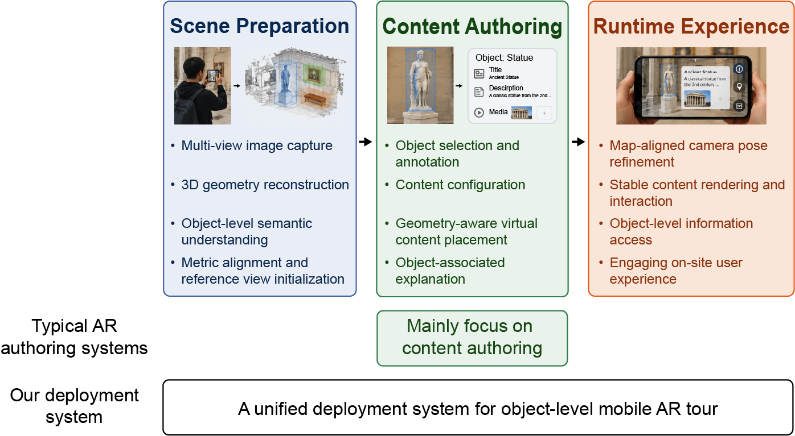

Tianchi Luan （栾天驰）
Pinyin: Tiānchí Luán
IPA: [tʰjɛn˥ tʂʰɻ̩˧˥ lwan˧˥]
I am a Master's student at the State Key Laboratory of Virtual Reality Technology and Systems, School of Computer Science and Engineering, Beihang University, advised by Prof. Yue Qi.
My research focuses on 3D Vision and Extended Reality (XR), particularly learning-based 3D reconstruction and hierarchical semantic representations for real-world XR applications.
I am always open to research discussions and collaborations. Feel free to reach out!